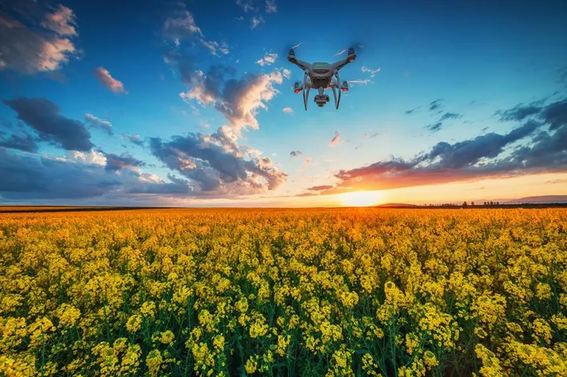
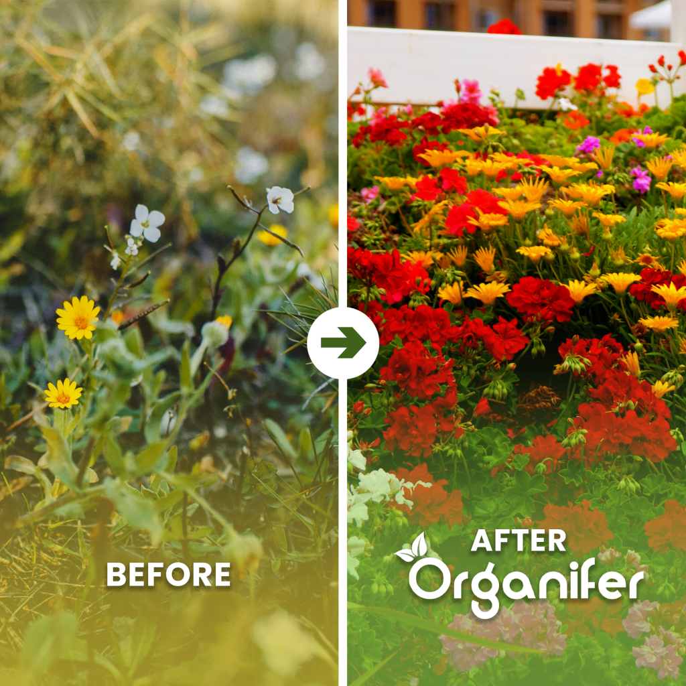
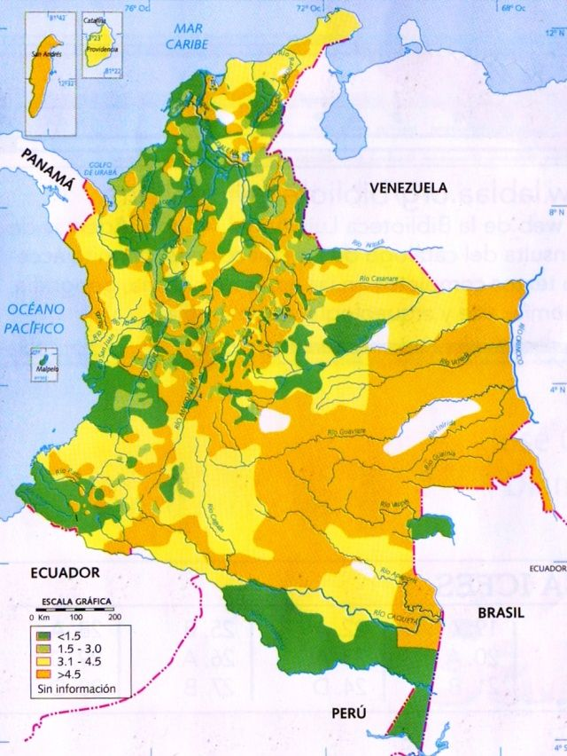
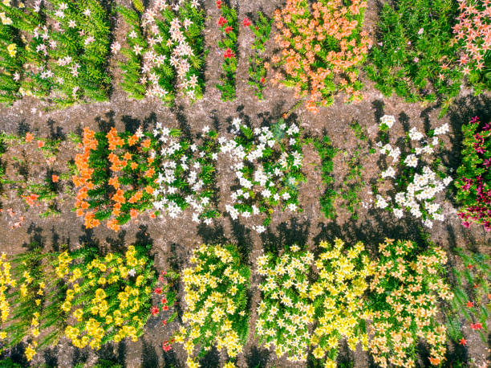

Observacion y Monitoreo Floral
Este apartado analiza cómo se registra y estudia la superfloración mediante imágenes o fotografías.
Permiten identificar las zonas donde se inicia y expande la superfloración.

Los drones capturan imágenes detalladas del terreno y la densidad de flores.
Fotografías tomadas por personas o investigadores en el lugar del fenómeno.

Muestra la diferencia del paisaje antes y durante la superfloración.
Extensión y densidad del florecimiento
Presenta las dimensiones del área y la concentración de flores durante el fenómeno.
Lugar en el cual se evidencia la superfloración.
Explica cuántas flores hay por cada superficie del terreno.
Muestra cómo el relieve y el tipo de suelo influyen en la cantidad de flores.

Nutrientes
Los nutrientes principales que fortalecen las raíces y estimulan la floración.
- Nitrógeno (N): favorece el crecimiento de hojas y tallos.
- Fósforo (P): estimula la formación de flores y raíces.
- Potasio (K): mejora la resistencia de las plantas y la calidad de las flores.
- Calcio (Ca) y Magnesio (Mg): ayudan a mantener el equilibrio del suelo y la fotosíntesis.
Juegos Educativos
Aprende jugando y pon a prueba tus conocimientos con estos recursos:
🌱 Educaplay – Cultivo Hidropónico 🌿 Cerebriti – Plantas Hidropónicas 🍃 Mobbyt – Agricultura Hidropónica